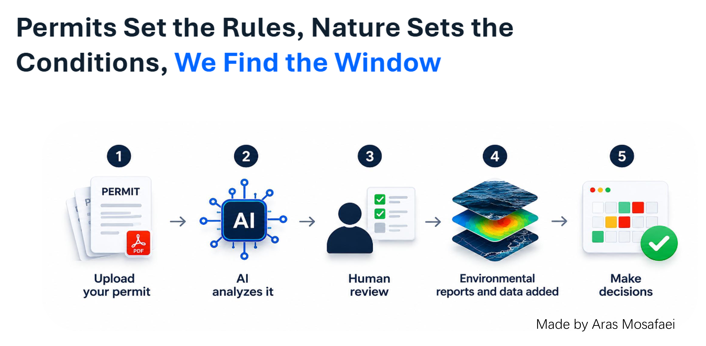
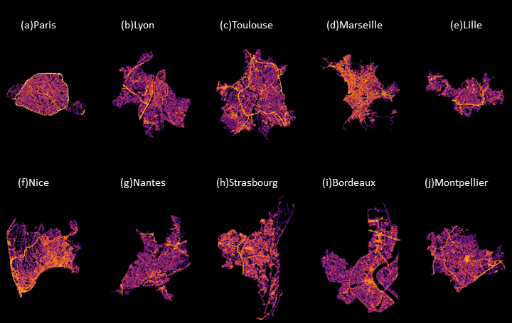
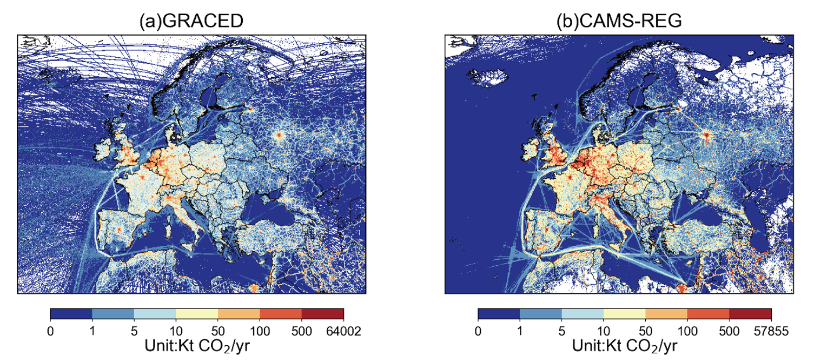
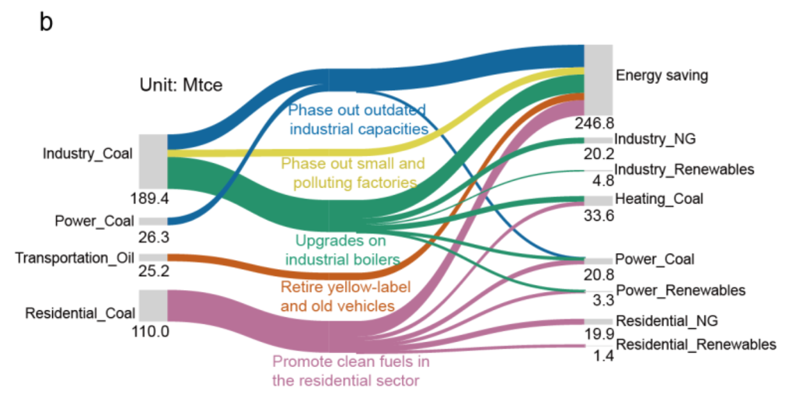
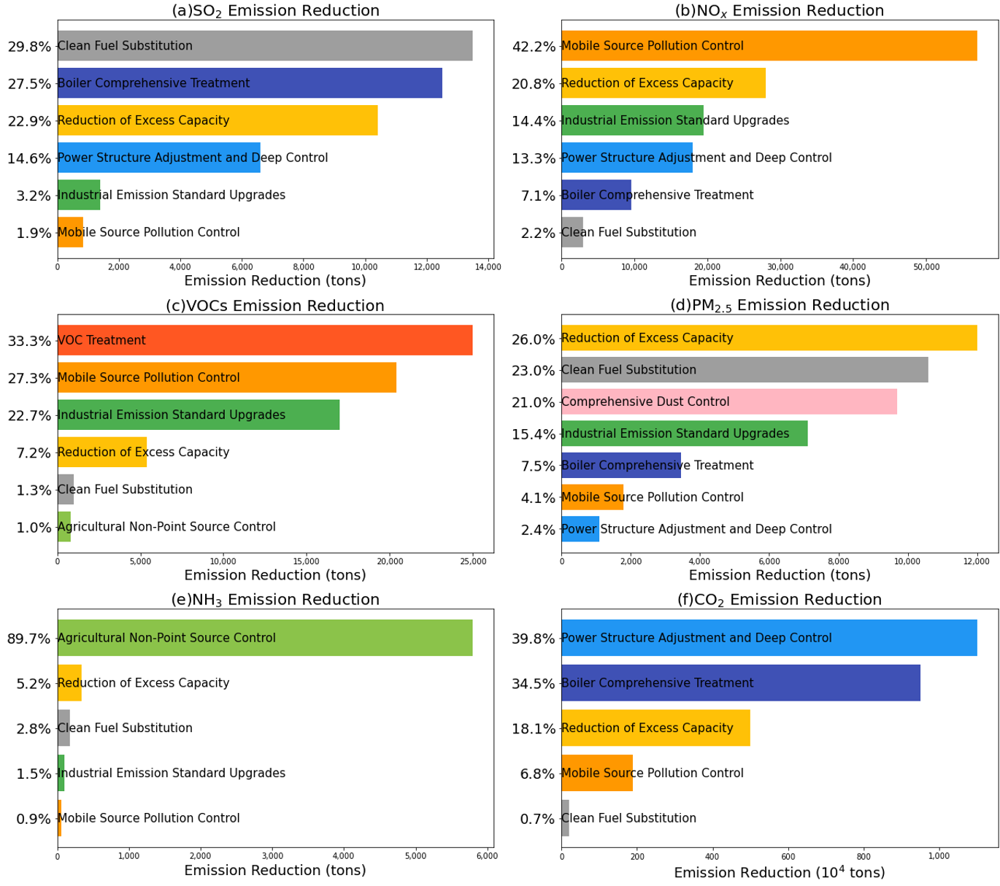

PermitPulse · Find the Right Window for Offshore Work
A hackathon team project that combines marine permit conditions with ocean and weather data to assess candidate work windows for offshore operations.
I’m an environmental engineer and climate data scientist. I build tools for emissions analysis, carbon compliance, and environmental decision-making.



A hackathon team project that combines marine permit conditions with ocean and weather data to assess candidate work windows for offshore operations.
Backend development for a maritime UK ETS compliance application, covering voyage and fuel data validation, emissions calculations, and allowance estimates.

Hourly traffic emissions maps at 100 m resolution, built from anonymized vehicle GPS data for 20 cities in France, Germany, and the Netherlands.

A comparison of GRACED and CAMS-REG that identifies where the two European CO2 inventories agree and where their sector estimates differ.

An assessment of how China’s clean air measures affected energy use and CO2 emissions between 2013 and 2020.

A study of how Zhengzhou, Shijiazhuang, and Huzhou can coordinate air quality measures with carbon peaking strategies.
Please don’t hesitate to contact me if you are interested or have any suggestions or questions!